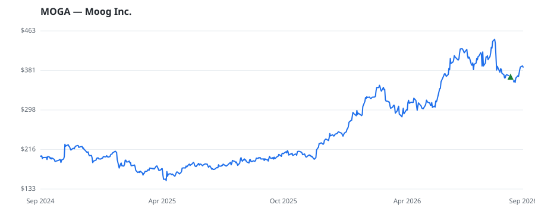

bullish · bearish · n/a — dots: price>SMA10 · SMA10>SMA50 · SMA50>SMA200 · up>down volume (20d)
Capital Goods · large cap · ★ 1 buyer(s) sit on a committee that regulates this industry
Members who bought MOGA earned a dollar-weighted +0.7% from their disclosure dates, versus +2.1% for the S&P 500 over the same holding windows (-1.4% alpha).

▲ green = a disclosed purchase · ▼ red = a disclosed sale (plotted on disclosure date)
Moog Inc. manufactures precision motion and fluid control systems for aerospace, defense, and industrial markets. Its four segments are Space and Defense, Military Aircraft, Commercial Aircraft, and Industrial, with the majority of revenue from Space and Defense. The company provides components for defense vehicle platforms, missile systems, naval ships, submarines, and space launch vehicles, and spacecraft. Its products include actuation systems, motion platforms, motors, servo and proportional valves, slip rings, propulsion systems, and weapon stores management systems. it serves industries MISC INDUSTRIAL & COMMERCIAL MACHINERY & EQUIPMENT · website
| Revenue | $3.9B | Net income | $235.0M |
|---|---|---|---|
| Operating income | $449.6M | Diluted EPS | $7.33 |
| Assets | $4.4B | Equity | $2.0B |
| Member | Chamber | Out-performer | Disclosed buys $ | Return on buys |
|---|---|---|---|---|
| Gilbert Cisneros ★ | house | — | $32K | +0.7% |
Disclosed $ figures are bracket midpoints — filings report ranges (e.g. $1,001–$15,000), not exact amounts.